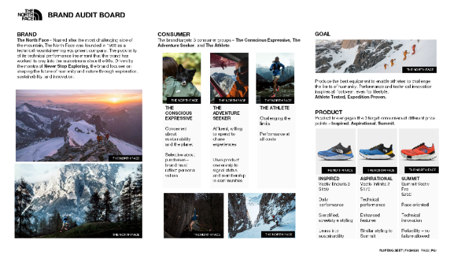
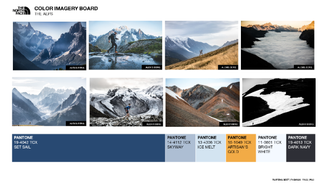
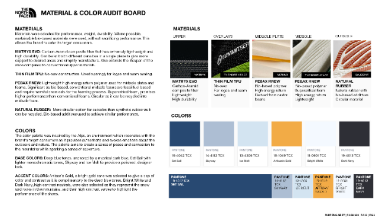
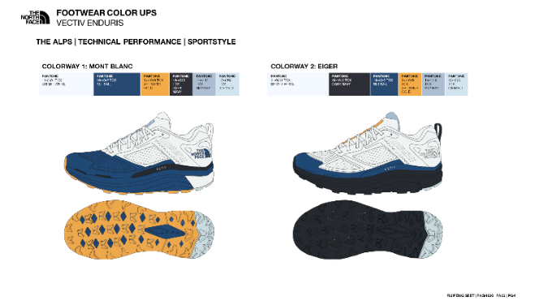

Capstone project for a Footwear Materials, Color & Trend Analysis course at Lasell University. The objective was to reimagine the materials and colors for a brand in two weeks. I selected The North Face as my brand.
The project consisted of a brand audit board, color imagery board, material & color audit board, and footwear color-ups. I deepened my understanding of how marketing, product line management, and design come together to identify target consumers and market opportunities, build a product line, select colors and materials based on trends, function, sustainability, and cost, and design the final product. The exposure to current innovations in footwear materials was a particularly useful takeaway for my development as a footwear developer.



